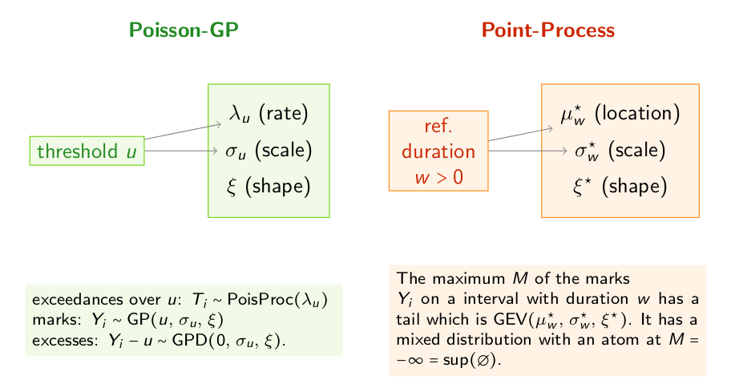
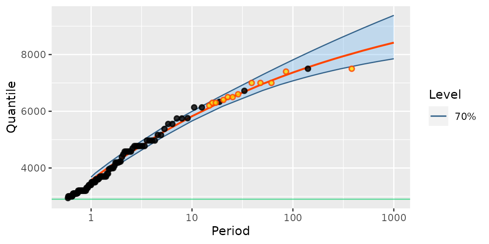
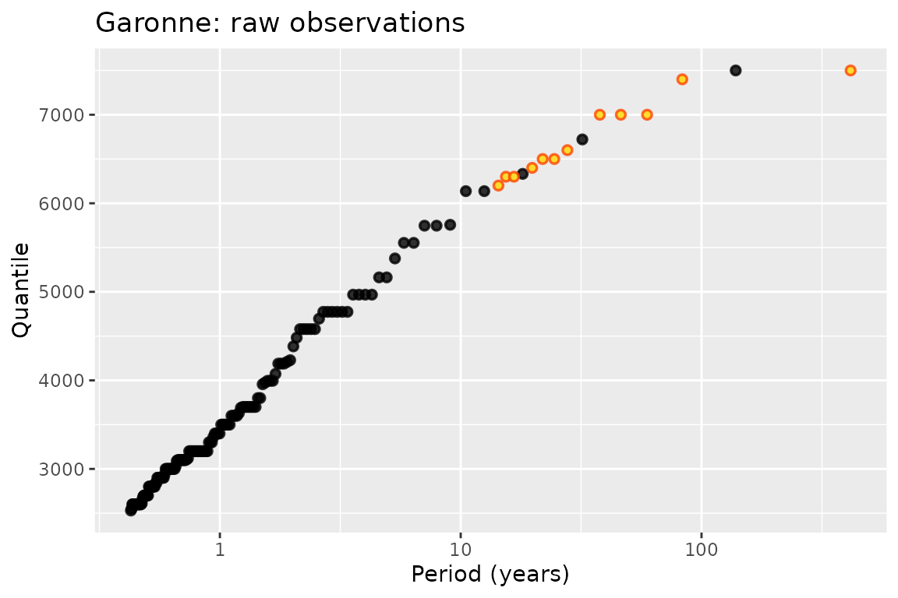
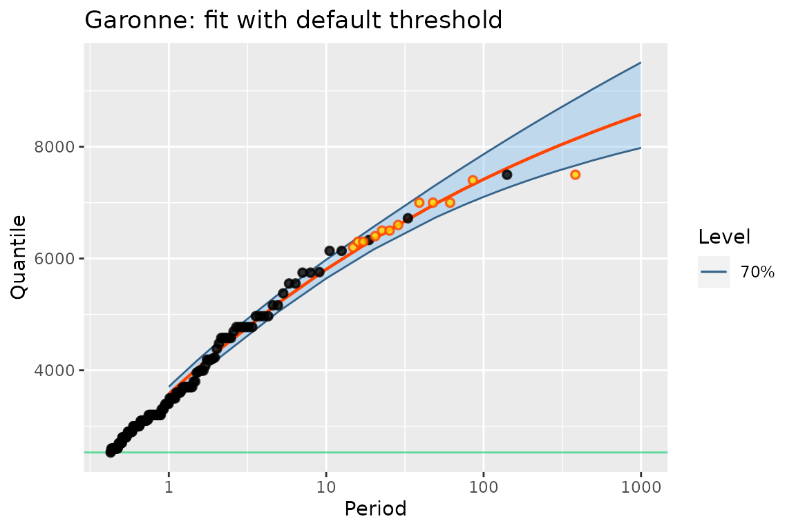
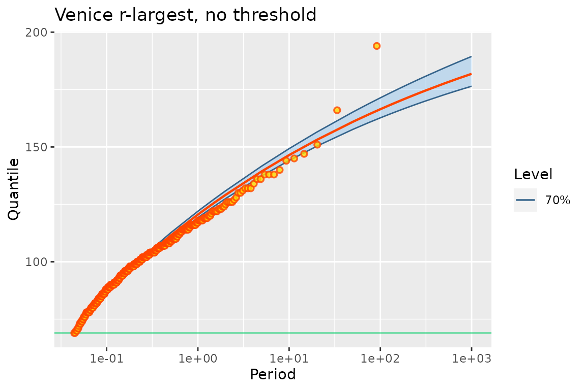
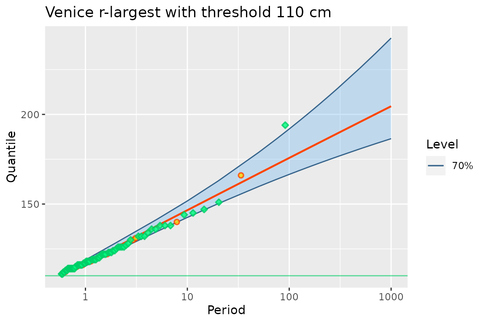
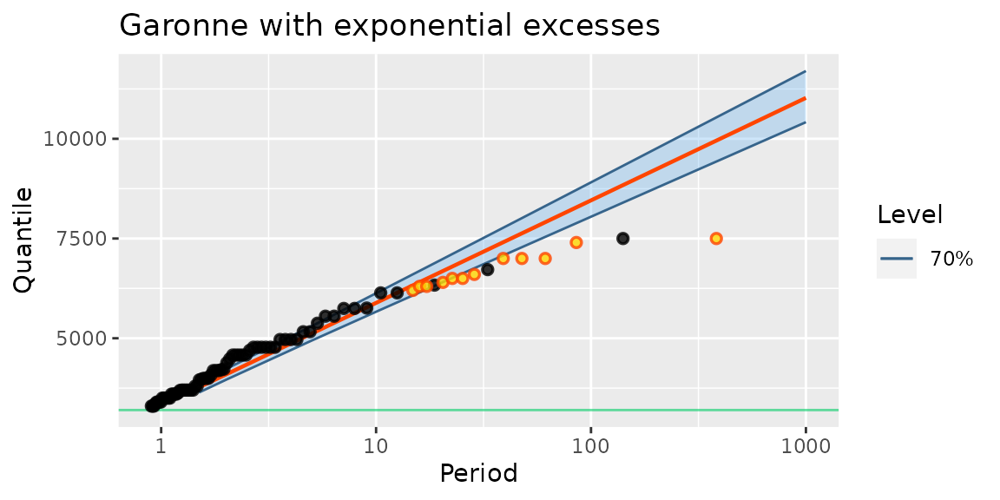
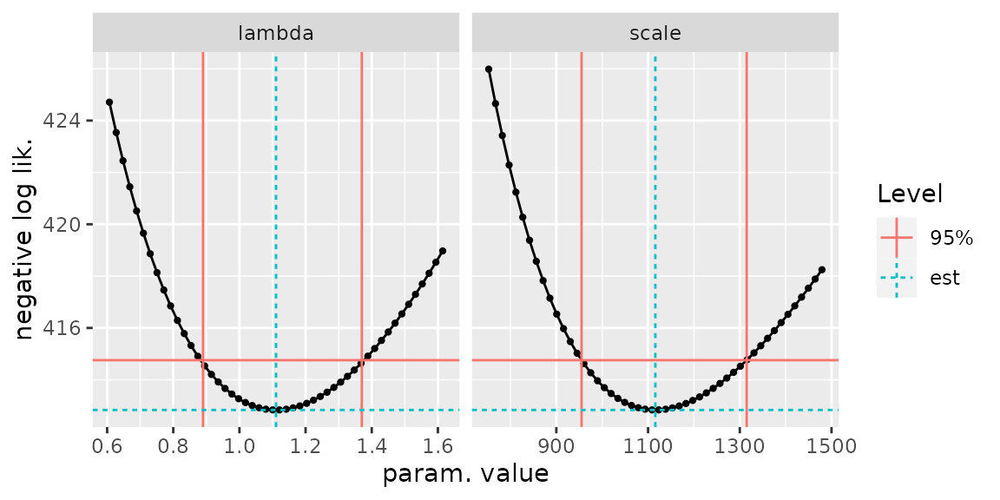

This vignette has been compiled with R version 4.3.2 (2023-10-31) using potomax 0.2.4.
The potomax package
Scope
The potomax package has been financed by IRSN/Behrig and designed in response to some of Behrig’s practical needs for Extreme-Value modelling.
The potomax package is devoted to the estimation and inference of the Poisson-GP model in Extreme-Value Analysis. The model is a marked Poisson process indexed by time with the marks distributed according to the Generalised Pareto (GP) distribution. This is a classical framework for Peaks Over Threshold (POT) modelling (Davison and Smith 1990), although the Binomial-GP can also be used.
By aggregating the marks in time and retaining the maxima or the largest observations over given time intervals or time blocks, we get the classical block maxima and \(r\)-largest observations. As one of the original features of the package, one can censor block maxima or \(r\)-largest observations to discard non-extreme block maxima.
Similarities and differences with Renext
As is the case with the formerly released package Renext (Deville and IRSN 2022), the package potomax allows the use of observations that are aggregated in time. These involve standard block maxima, but also historical information.
potomax has several major differences with Renext, which motivated the creation of a new package
Profile likelihood inference (Davison 2003) can be used for the parameters and for the return levels.
Only the GP distribution can be used for the marks or excesses. Since the GP distribution is the only distribution which can be called POT-stable, the limitation to the GP is harmless as far as the interest is on Extreme-Value analysis.
Most graphics are based on the ggplot2 package (Wickham 2016), and the
autoplotmethod will be used instead of theplotmethod.
There are also differences plotting positions which will be briefly discussed below.
Model and parameters
The Poisson-GP model describes observations of random marks \(Y_i\) at random times \(T_i\) with the following assumptions.
The events \(T_i\) form a Poisson Process with rate \(\lambda >0\).
The marks \(Y_i\) are i.i.d. with \(Y_i \sim \text{GPD}(u,\, \sigma, \, \xi)\).
The marks \(Y_i\) are independent of the Poisson process of events.
The number \(u\) is regarded as given and corresponds to the POT threshold. This model can be said to be POT-stable, because if we select the exceedances \(Y_i> u'\) over a higher threshold \(u' > u\), the three assumptions still hold for a different rate \(\lambda_{u'}\) and a different GP scale \(\sigma_{u'}\).
These assumptions allow the derivation of the marginal distribution of so-called block maxima. Consider a time interval with duration \(w\) and the maximum \(M := \max\{Y_i\}\) of the marks \(Y_i\) corresponding to the times \(T_i\) in the interval. Then, up to an atom corresponding to the case where no event occur in the interval, the random variable \(M\) follows a Generalised Extreme Value (GEV) distribution. Moreover if we consider a partition of the time axis into time intervals or time blocks \(b =1\), \(2\), \(\dots\) with the same duration \(w\), we get i.i.d. GEV random variables \(M_b\).
The model involves a vector \(\boldsymbol{\theta}\) of three parameters.
The Poisson-GP parameterisation uses: the rate \(\lambda\) for the time-indexed Poisson process of events and the two parameters scale \(\sigma\) and shape \(\xi\) of the GP distribution of the excesses \(Y_i -u\) over the threshold \(u\). Note that both \(\lambda\) and \(\sigma\) depends on the threshold \(u\) and consequently could be denoted by \(\lambda_u\) and \(\sigma_u\).
The Point Process or Non-Homogeneous Point Process (NHPP) parameterisation refers to a reference block duration \(w\) and the uses the three parameters of the marginal GEV distribution for the maximum \(M\) of the marks \(Y_i\) on an interval with duration \(w\). These parameters are the location \(\mu^\star\), the scale \(\sigma^\star\) and the shape \(\xi^\star\). Since the location and the scale depend on the reference duration \(w\), they could be denoted by \(\mu^\star_{w}\) and \(\sigma^\star_{w}\).
The shape parameter \(\xi\) or \(\xi^\star\) is the same in the two parameterisations, and relates to the common tail-index of the two distributions GP and GEV. This parameter characterises the common domain of attraction of the distributions of the excesses and of the block maxima.
The two POT parameterisations are used in several CRAN packages, including: evd (Stephenson 2002), ismev (Heffernan and Stephenson 2012), extRemes (Gilleland and Katz 2016), POT (Ribatet and Dutang 2022). See also Northrop et al. (Northrop, Jonathan, and Randell 2016) for a presentation of the two frameworks and their differences in the non-stationary extension using covariates.

The Poisson-GP parameterisation will often be preferred because it can allow to concentrate the rate parameter out of the log-likelihood, leading to a two-parameter optimisation instead of a three-parameter one. This holds for the specific kinds of censoring allowed in the package.
Note that in the Poisson-GP formulation we can use observations that are exceedances over a threshold \(u'\) and parameters related to another “reference” threshold \(u\). This is similar to the NHPP parameterisation where the classical one-year reference block duration could be used with observations for two-year blocks. So, the specific parameterisation does not impose the specific censoring needed to elicit the observations that are extreme enough. Many series of annual maxima embed observations that would not be judged as extreme enough in the POT approach. Rather than aggregating then the annual maxima into bi-annual maxima, we can simply use censoring, see the Venice example below.
Creating and using poisGP objects
The main class in the package is "PoisGP". The eponymous
creator uses a data formal argument which can be given a
simple numeric vector containing the marks \(Y_i\), or more complex data structures such
as "Rendata" from Renext or
"potData" from potomax, see below. We
begin by using the Garonne object from
Renext. This object contains observations for the
discharge rate of the river Garonne (France) in cumecs. It embeds both
“systematic” observations and “historical” observations.
Garonne## o Dataset La Garonne river flow
## data 'Garonne', variable 'Flow' (m3/s)
##
## o OT data (main sample) from 1913-01-01 to 1978-01-01 (eff. dur. 65.00 years)
##
## n Min. 1st Qu. Median Mean 3rd Qu. Max.
## 151.000 2530.000 2900.000 3200.000 3591.675 3995.000 7500.000
##
## o no missing OT periods
##
## o 'MAX' historical info: 1 blocks, 12 obs., total duration = 143.09 years
##
## o no 'OTS' historical data## [1] "poisGP"
methods(class = "poisGP")## [1] AIC autoplot BIC coef confint logLik MLE print
## [9] RL summary vcov
## see '?methods' for accessing help and source codeThe methods implemented are classical and can be used as in many
other packages. Note that the plot method does not exist,
and that autoplot should instead be used.
autoplot(fitGaronne)
Note that the 12 “historical” observations are plotted using a different colour.
The classical coef method can be used to extract the
(estimated) parameters. It has an argument type allowing to
choose the parameterisation. The parameters are estimated in the
Poisson-GP parameterisation, and then translated into the NHPP
parameterisation.
coef(fitGaronne)## lambda scale shape
## 1.7259695 1287.2134428 -0.1650405
coef(fitGaronne, type = "PP")## loc scale shape
## 3571.8341138 1176.3335728 -0.1650405The shape parameter is the same in both parameterisations. However
the scale parameters differ.
Profile likelihood
Using constrained optimisations
Profile likelihood can be used to infer on the parameters, be they in
the Poisson-GP or in the NHPP parameterisation. As for the
coef method, the confint method has a
type argument allowing to switch from the default
parameterisation to the "NHPP" one. The cheap delta
method can also be used in place of profile likelihood if
needed.
confint(fitGaronne)## , , 95%
##
## L U
## lambda 1.432 2.057
## scale 991.960 1620.818
## shape -0.300 0.005
confint(fitGaronne, method = "delta")## , , 95%
##
## L U
## lambda 1.413 2.039
## scale 971.417 1603.010
## shape -0.316 -0.014
confint(fitGaronne, type = "PP")## , , 95%
##
## L U
## loc 3333.326 3824.637
## scale 977.466 1405.775
## shape -0.300 0.005Profile likelihood can also be used to infer on the return levels as
returned by the RL method.
As in the NSGEV package, the profile likelihood confidence intervals for the parameters are in potomax computed by using constrained optimisations. Roughly speaking, we maximise and minimise the parameter under the constraint that the log-likelihood is high enough. More precisely, if \(\eta = \eta(\boldsymbol{\theta})\) is a scalar parameter of interest, we can find the upper bound \(\eta_{\text{U}}\) of a confidence interval on it by maximising the parameter \(\eta\) under the constraint \(\ell(\boldsymbol{\theta}) \geqslant \ell_{\text{max}} - \delta\), where \(\ell(\boldsymbol{\theta})\) is the log-likelihood function and \(\ell_{\text{max}}\) is its maximal value. The (positive) quantity \(\delta\) relates to the chi-square distribution with one degree of freedom according to \(\delta = q_{\chi^2(1)}(1 - \alpha) / 2\), where \(1 - \alpha\) is the chosen confidence level. Similarly, the lower bound of the interval by minimising \(\eta\) under the same constraint.
Remind that the classical method used for profile likelihood consists in computing the profile log-likelihood function \(\ell_{\text{prof}}(\eta)\) and in solving numerically the equation \(\ell_{\text{prof}}(\eta) = \ell_{\text{max}} - \delta\). Provided that the log-likelihood function is well-shaped, two solutions exist: one on each side of the ML estimate \(\widehat{\eta}\). These are the lower and upper bounds of the confidence interval \((\eta_{\text{L}}, \, \eta_{\text{U}})\). Each evaluation of the profile log-likelihood requires an optimisation on \(2\) parameters, and moreover we have to solve the two equations by using either a zero-finding method or a search on a grid of candidate values for \(\eta\).
Checking the results
The constrained optimisation method is appealing for its generality. However, the optimisation can fail and misleadingly indicate a convergence, which can be quite difficult to diagnose. The classical approach solving equations for the profile log-likelihood may also fail, yet the results can be checked by plotting the the negative profile likelihood \(-\ell_{\text{prof}}(\eta)\) against the parameter \(\eta\), which should lead to a smooth curve with a minimum at the ML estimate \(\widehat{\eta}\). By adding the horizontal line corresponding to the negative log-likelihood ordinate \(-(\ell_{\max} - \delta)\), the confidence bounds \(\eta_{\text{L}}\) and \(\eta_{\text{U}}\) should be the abscissas of the two intersection points between the curve and the horizontal line. This approach is used by several R packages including ismev, evd, extRemes and POT. This check has been implemented in potomax as well.
Both the RL and the confint methods have an
argument check taking a logical value. Using
check = TRUE will produce a plot visual check as shown
below. On the curves in black, each bullet required an evaluation of the
profile log-likelihood, hence a two-parameter optimisation. It may
happen that the optimisation fails, leading to a NA. This
happens quite often for the small (negative) values of the shape
parameter \(\xi\) or for the small
values of the return levels corresponding to a small return period, say
\(T < 10\) years.
If the results are good, then we can re-run with the (default)
check = FALSE to get the results involving confidence
intervals.
autoplot(confint(fitGaronne, check = TRUE))
Checking the results of confint. The red vertical lines
show the bounds. The negative log-likelihood curve and the horizontal
red line should intersect at the bounds.
autoplot(RL(fitGaronne, check = TRUE))
Checking the confidence intervals of RL. The red vertical
lines show the bounds.
Heterogeneous data
Different kinds of observations
In the simplest use, the formal argument data is a
numeric vector giving the marks \(Y_i\). Then one must also use the formal
argument effDuration to give the so-called
effective duration which can take into account possible gaps in
the data. In this case the estimate of the rate \(\lambda_u\) for a given threshold \(u\) is simply number of \(Y_i\) with \(Y_i
> u\), divided by the effective duration.
The two optional arguments MAX.data and
OTS.data can be used to describe observations that have
been censored: by value (Type I) or by number (Type
II). In both cases, the observations are given as a list which
must be completed by a numeric vector of durations,
MAX.effDuration or OTS.effDuration. Each
element of the “data” list corresponds to an interval of time and
contains a vector with either the largest observations (for
MAX.data) or all the observations that exceeded a specific
threshold (for OTS.data). The list must have the same
length as the numeric vector of durations, each element relating to a
period of time. In the “OTS” case, one must also give a numeric vector
of thresholds OTS.threshold.
Note that MAX.data can be used for the classical block
maxima and the \(r\)-largest
observations.
Both for MAX and OTS data it is a good practice to use named lists, in order to keep a trace of the period. For instance the names can be the years for block maxima or for \(r\)-largest observations. The same vector of element names should then be used for the data lists, the vector of durations and the vector thresholds in the “OTS” case.
Finally, rather than using several arguments we can use a single
structure describing the heterogeneous data. For this aim the function
potData can be used to create an object of class
"potData". Such an object can be passed to the
data argument of poisGP an be re-used if
different fits are a.g., with different thresholds.
G <- potData(data = Garonne$OTdata$Flow,
effDuration = 65,
MAX.data = Garonne$MAXdata$Flow,
MAX.effDuration = 143)
str(G)## List of 3
## $ OT :List of 4
## ..$ flag : logi TRUE
## ..$ effDuration: num 65
## ..$ n : int 151
## ..$ data : num [1:151] 2600 2800 2700 4579 3400 ...
## $ MAX:List of 4
## ..$ flag : logi TRUE
## ..$ effDuration: num 143
## ..$ r : int 12
## ..$ data :List of 1
## .. ..$ MAX block#1: num [1:12] 7500 7400 7000 7000 7000 6600 6500 6500 6400 6300 ...
## $ OTS:List of 5
## ..$ flag : logi FALSE
## ..$ effDuration: logi NA
## ..$ r : logi NA
## ..$ threshold : NULL
## ..$ data : NULL
## - attr(*, "class")= chr "potData"
autoplot(G) + ggtitle("Garonne: raw observations")
The potData structure encapsulates several possible
arguments of PoisGP in a single object. This is similar to
what is done for the classical plot method: its argument
x can be either a vector or a list with elements
x and y.
autoplot(poisGP(data = G)) + ggtitle("Garonne: fit with default threshold")## Warning in poisGP(data = G): 'threshold' is missing and set just below the
## smallest obsevation## Warning in threshData(threshold = threshold, data, exceed = TRUE, scale =
## scale, : 'threshold' is smaller than the smallest observation## Warning in threshData(data, threshold = threshold, exceed = FALSE, scale =
## FALSE): 'threshold' is smaller than the smallest observation
Note that when a potData object is used as the
data argument with no threshold, a default threshold is
used. It is chosen just below the smallest observation in the data,
including those in data, MAX.data and
OTS.data, if any. When this rule is applied with only
MAX.data and when all the elements in
MAX.effDuration are identical, the fitted object is
compliant with the usual block maxima estimation: the estimated
parameters in the PP parameterisation are those returned by
classical functions for the estimation of GEV parameters such as
ismev::dev.fit or evd:fgev. Remind however
that MAX.data must be a list, not an atomic
vector, and that the durations must be given.
\(r\)-largest example: Venice data
We now use the Venice data from the ismev package,
see section 3.5 in Coles’ book (Coles 2001). The data contain the \(r\)-largest annual observations of the sea
level in Venice. The data come as a matrix with one row by year
containing the \(10\) largest water
levels (in cm), possibly NA. Some transformations are
needed to use the poisGP function. Note that the first
column of venice must be removed from the data since its
contains the year.
data(venice, package = "ismev")
yNms <- as.character(venice[ , 1])
MAX.data <- as.list(as.data.frame(t(venice[ , -1])))
MAX.data <- lapply(MAX.data, function(x) x[!is.na(x)])
MAX.effDuration <- rep(1, length(MAX.data))
names(MAX.data) <- names(MAX.effDuration) <- yNms
## fir r-largest models
fit2i <- ismev::rlarg.fit(venice[ , -1], show = FALSE)
fit2R <- Renext::fGEV.MAX(MAX.data = MAX.data, MAX.effDuration = MAX.effDuration)
fit2p <- poisGP(MAX.data = MAX.data, MAX.effDuration = MAX.effDuration)## Warning in threshData(threshold = threshold, data, exceed = TRUE, scale =
## scale, : 'threshold' is smaller than the smallest observation## Warning in threshData(data, threshold = threshold, exceed = FALSE, scale =
## FALSE): 'threshold' is smaller than the smallest observationBoth Renext and potomax throw warnings because they have to set the missing threshold just below the smallest observations in order to stick to the Poisson-GP parameterisation. In a classical POT, it is unnatural that all observations are exceedances.
In order to compare the coefficients across packages, we must use the
"PP" coefficients of the poisGP object rather
than the standard "poisGP" coefficients.
## ismev Renext potomax
## loc 120.5479027 120.5452617 120.5459990
## scale 12.7840265 12.7831983 12.7838900
## shape -0.1129418 -0.1129793 -0.1129545Caution When comparing log-likelihoods across
packages, some difference may be due to the use of different constants,
see ?logLik.poisGP. We choose here the "PP"
type log-likelihood which usually makes the results comparable to those
based on block maxima or on \(r\)-largest.
## ismev Renext potomax
## [1,] -1139.09 -1139.09 -1139.09Now profile likelihood confidence intervals on parameters
confint(fit2p)## , , 95%
##
## L U
## lambda 24.749 31.087
## scale 16.838 20.439
## shape -0.133 -0.067
autoplot(fit2p) + ggtitle("Venice r-largest, no threshold")
As written by Coles, “the plots again indicate a fundamental lack of fit for the model”. Note that the smallest observations indicate a neat concave curvature, while the largest ones seem to better conform to an exponential tail. We can further investigate this by censoring the the MAX data, on the basis of the Poisson-GP model. We here choose a threshold of \(110\) cm corresponding to ”very intense” aqua alta.
fit3p <- poisGP(MAX.data = MAX.data, MAX.effDuration = MAX.effDuration, threshold = 110)
coef(fit3p)## lambda scale shape
## 1.730358874 12.916670381 -0.004969052
autoplot(fit3p) + ggtitle("Venice r-largest with threshold 110 cm")
The fit is now quite good. We have years with no observations and years with \(5\) observations or more, which is a departure from the Poisson hypothesis often met in POT.
When using a threshold with MAX.data, it may happen that
for a given block (here one year) some observations are under the
threshold, hence have to be discarded. In this case, the block is
considered as OTS.data. This works even when the block no
longer contains any observation and is the correct way to encode the
information in the censoring. This quite subtle point explains why a
different colour and shape (green diamond) is now used for the
corresponding blocks: “MAX” blocks were turned into “OTS” blocks. Note
that provided that a MAX block has at least an observation, its
log-likelihood is the same as that of an OTS block with its threshold
set to the smallest observations in the block.
Plotting positions
potomax favours the log-scale axis for the durations in RL plots, as opposed to the Gumbel scale. This allows to straightforwardly show the marks \(Y_i\). But block maxima can be shown on the same plot by using suitable plotting positions (Deville 2016). These positions are designed to get points around a common straight line in the exponential-Gumbel case \(\xi = 0\), both for the marks and the maxima.
The plotting positions are derived from Nelson’s plotting positions,
taking into account censoring when needed, then using the method of
Hirsh and Stedinger. For the marks, the resulting positions are very
close to those computed with the ppoints function with its
default arguments, as used in most R packages. They differ from the
so-called Weibull positions used in Renext. As
a consequence, the largest observations seem to be related to larger
return periods when compared to Renext. Mind however
that attaching a return period to the largest observations is prone to
misinterpretation. See the help of the RP method and
references/links therein for details on the plotting positions.
Special GP distribution for the excesses
Exponential-Gumbel case
From version 0.2.0, it is possible to use the exponential
distribution as the distribution of the excesses \(Y_i -u\), implying Gumbel maxima \(M\) over time intervals. This is simply
achieved by using the formal argument distName with the
value "exp1", the default GPD corresponding to
"GPD2". In this case the vector of parameters is \([\lambda, \, \sigma]\) (rate
and scale) for the Poisson-GP parameterisation, and \([\mu^\star,\, \sigma^\star]\)
(loc and scale) for the NHPP parameterisation.
The inference on the parameters is similar to that of the standard case
of GPD exceedances.
fitGaronneExp <- poisGP(data = Garonne, threshold = 3200, distName = "exp1")
autoplot(fitGaronneExp) + ggtitle("Garonne with exponential excesses")
autoplot(confint(fitGaronneExp, check = TRUE))
Constraints on parameters
The poisGP creator function has two arguments
coefLower and coefUpper that can be used to
set bounds on the parameters. These are used only when
estim is set to "nloptr". The bounds can be
infinite Inf or -Inf. Moreover if the lower
and the upper bounds for one parameter are identical, then the parameter
will be fixed. As a rule, the inference will be misleading when
inequality bounds are given. For instance, setting the bound \(\xi \geqslant 0\) corresponds to using the
Lomax distribution for the excesses but with a possible ML estimate
\(\widehat{\xi} = 0\) on the boundary.
The confidence intervals will generally be misleading when constraints
are used.
Notes and issues
Return levels
The return level for a period \(T\) can equivalently be considered as a function \(\rho(T;\,\boldsymbol{\theta})\) of the Poisson parameter \(\boldsymbol{\theta}\) or as a function \(\rho^\star(T;\, \boldsymbol{\theta}^\star)\) of the PP parameter \(\boldsymbol{\theta}^\star\). The two functions take the same value when \(\boldsymbol{\theta}\) and \(\boldsymbol{\theta}^\star\) describe the same model. For \(\xi \neq 0\) these are \[ \underset{\rho(T;\,\boldsymbol{\theta})}{\underbrace{% u + \sigma_u \, \frac{[\lambda_u T]^\xi - 1}{\xi}}} = \underset{\rho^\star(T;\,\boldsymbol{\theta}^\star)}{\underbrace{% \mu^\star_w + \sigma^\star_w \frac{[T /w]^{\xi^\star} - 1}{\xi^\star}}}, \]
and for \(\xi = 0\) we can use the log limit of the Box-Cox transformation. Note that \(\rho^\star(T)\) given above is the continuous duration return level, which for \(T\) small differs from the block duration return level} that is associated to the number \(T/w\) of blocks with duration \(w\). To get the classical return level for block maxima, replace \(q := w /T\) by \(1 - \log(1 - q)\), nearly the same thing for small \(q\), say \(q < 1/50\).
Log-likelihood, AIC and BIC
The log-likelihood is defined up to an additive constant. Most R
packages use two different constants: one for block maxima, one for POT
without caring about consistency. For example using
evd::fpot with the same data and the two choices
model = "pp" and model = "gpd" we get two
estimates which are consistent up to the re-parameterisation, but yet
have different log-likelihoods. So it may be difficult to compare the
log-likelihoods across packages or even within a package.
In the general framework considered in potomax, the concept of number of observations is unclear, hence so are AIC and BIC. The concept of number of observations makes sense when the observations have the same marginal distribution and are independent and identically distributed, or correspond to a form of stationarity. But in the framework of potomax, one observation for a widespread time interval may be more informative than several observations corresponding to events or smaller time intervals.